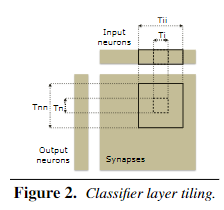
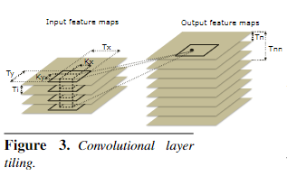
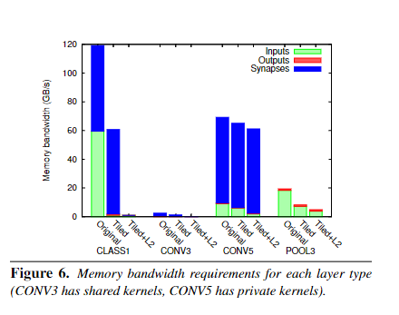
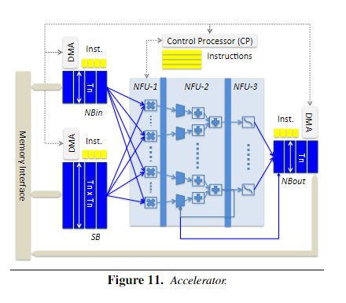

DianNao系列论文阅读
本文最后更新于：2024年3月8日 上午
DianNao: A Small-Footprint High-Throughput Accelerator for Ubiquitous Machine-Learning
概述
DianNao：一个用于普遍机器学习的小规模高通量加速器。寒武纪开山之作
现阶段（2014）机器学习工作中（CNN、神经网络）CPU性能不够，GPU、FPGA等功耗过高。
当前的绝大多数acc的关注点都在于算法计算部分（efficiently implementing the computational part of the algorithms），然而CNN和DNN的特点是大尺寸、大计算量。在这种情况下，DMA的效果不太好。因此我们针对这一特性，设计了一个专门对访存做特别优化的加速器
对比常规SIMD处理器速度快117倍，能耗比提高21倍
Intro
加速器设计的权衡：灵活性和高性能。而由于当时机器学习的SOTA就是CNN和DNN，种类有限，所以可以这类计算设计出有针对性的加速器
当前针对CNN或MLP的加速器都专注于神经网络中计算原语如卷积的有效实现，如矩阵乘法、向量计算方面的优化。但是忽略了对性能影响同样巨大的访存部分
由于阿姆达尔定律，即使计算原件做大量优化，整体性能依旧会受制于内存传输部分，并且在机器学习领域，为了实现更高的精度和功能，有一个必然的趋势就是提高神经网络的规模，而这也证明了访存优化对于设计加速卡的重要性
主要贡献：高吞吐、高能耗比、侧重内存性能的加速卡设计
最新机器学习技术入门
当前的市场来说，我们的加速器应该聚焦于网络的前馈而非反馈。这是由于在许多业务场景下离线学习都是主流，网路可以周期性的进行离线学习，而拿到客户手中只需要高效的前向推理。并且由于反向传播和正向路径原理类似，我们在之后也会针对反向传播做出优化工作
基于处理器的（大型）神经网络实现
|  |  |  |
|---|
-
classifier层
- 就是全连接层，在一般的理解中，每一个output相当于所有input的加权求和在Sigmoid出的概率值，如图所示，synapses矩阵对于每个output来说该input的权重
- 首先展示的是针对全连接层的优化，一般比较符合直观思维的模式是逐行运算，每次输出一个output。这种方式在遇到大规模神经网络（i/o神经元数量大）时有一个问题：对带宽要求高，内存运输总数= inputs loaded + synapses loaded + outputs written = Ni x Nn + Ni x Nn + Nn
- 改进方式：将输入神经元进行tile loop，在L1缓存不够大的情况下，平铺再分块，类似卷积层，这样做的好处是对input神经元的数据做了复用，大大降低了输入神经元的内存带宽需求，略微增加了输出带宽需求（因为不再是一次出结果，需要written多次）
- 同时如果将synapses矩阵存入L2缓存（对于当时的神经网络来说，权重总数在百万数量级，仍在L2的范围内），可以进一步减少所需带宽
-
卷积层
- 有两种数据复用可能：滑动窗口（就是卷积核权重，滑动过程中卷积核不变）以及跨通道的输出复用
- 简单来说就是每次不再都整个input feature map，而是在map上截取一片Tx*Ty，每次不同的卷积核在上面卷积运算之后送给output，再最后加权求和
- 无非是由于缓存空间限制而对feture maps、Input channel、output channel做出截取，让运算时数据都在缓存中，降低内存带宽
- 针对卷积核权值共享做了优化，文章倾向于共享卷积核
-
池化层:
- 重用机会少，对于增加Tx，Ty效果不显著
小型神经网络加速器
- 对于小型网络，可假设所有神经元和突触都由硬件实现，内存仅用于I/O
- 对于小型神经网络可以大幅提高能耗，但随神经元数量增多面积、能量和延迟呈二次方增长
大型神经网络加速器

总共三大部件：
- 运算部分：NFU
- 存储部分：输入缓存NBin、输出缓存NBout、突触权重SB
- 控制逻辑：CP
NFU：
- 按照第三节，将每一层分解为Ti和Tn的计算块
- 流水线：layer都可以分为若干个规范计算单元的组合，将整个计算规范化，流程化
- NFU-1：乘法单元
- NFU-2：加法树
- NFU-3：激活单元
全连接层：突出*输入；乘积求和；激活函数sigmoid；
卷积层：计算阶段相同，只是激活函数可能不同；
池化层：没有乘积的操作，可以是求最大池化和平均池化
DaDianNao: A Machine-Learning Supercomputer
概述
在多核芯片中，由于CNNs和DNNs所需内存并未超过其片上存储空间，结合CNN/DNN算法自身特点，会导致高内部带宽和低外部通信这一情况，从而能在合理的区域成本下实现高并发。
Intro
前人工作缺陷：加速芯片要么有神经网络大小限制，要么对于大型网络，神经元和突触必须存储在内存中
神经网络性能瓶颈：内存访问
The GPU Option/ The Accelerator Option
CPU与GPU与DianNao的一些比较；DianNao的介绍，现有DianNao的不足
主要的限制来源于两种重要层的内存带宽需求：私有内核的卷积层(用于dnn)和全连接层
A Machine-Learning Supercomputer
权重存储在将使用它们的神经元附近，最大限度地降低数据移动，节省时间和能量;架构是完全分布式的，没有主存
非对称的体系结构，其中每个节点占用的空间大量偏向于存储而不是计算
传递神经元值而不是权重，因为在两个典型层中，神经元值比权重数量级小，需要相对较少的外部(跨芯片)带宽
通过将本地存储分解成许多块来实现高的内部带宽
将SRAM更换为eDRAM，缩小面积，但需要周期性刷新、延迟高
NFU无法简单扩大规模：数据布线面积占用过多，可扩展性差
对NFU进行分片
Cambricon: An Instruction Set Architecture for Neural Networks
概述
传统神经网络往往在CPU、GPGPU这样的的通用平台执行，通常来说不够节能，因为这种平台主要是为了灵活支持各类型工作
最近的一些硬件加速器，这类加速器通常采用高级指令直接控制高级功能块。但是，当需要灵活支持各种不同的NN时，这种直接控制块的方式就不太行
思路 a. 分解大块的操作成一个个小的指令，获得更大的灵活性。用户可以用低层次的操作组合成高层次的功能。b. 简单的短指令可以大幅降低设计验证的复查度和解码器的功耗和面积。